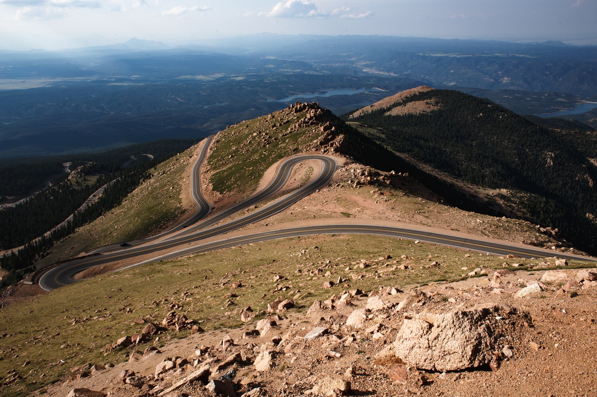
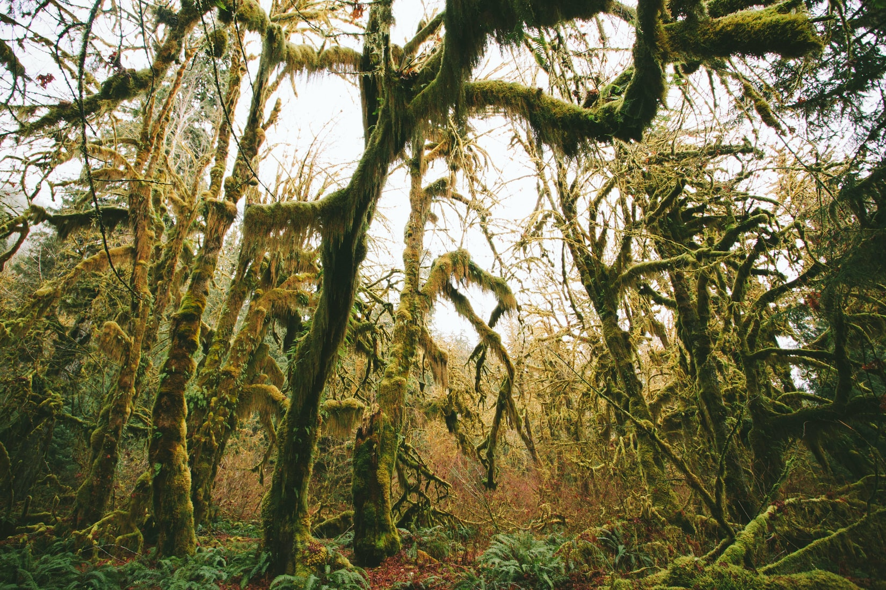
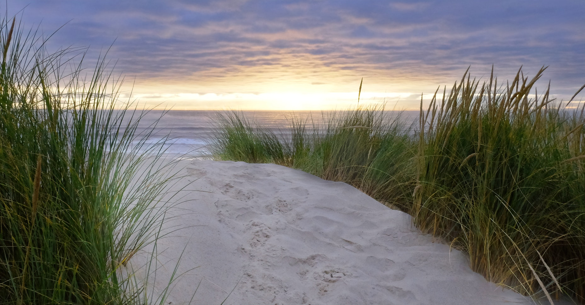

I grew up in near Cripple Creek, high up in Colorado's Rocky Mountains. Many people automatically think of snow when they here this, and while there was certainly plenty of that, most people don't know how sunny it is! It is a semi-arid climate with around 300 days of sunshine a year! Theres nothing quite as magical as seeing the sunshining down on fresh snow :)
Moving from 300 days of sunshine a year to 300 days of overcast skies a year was difficult. But along with all of the PNW's rain brings an abundance of moss hanging from trees. It truly makes the PNW a special environment.
If I could move anywhere right now, I would move to Oaxaca city. It's got all my favorite elements of a city!
Oregon beaches have larges stretches of sand and rolling dunes along with soft green plant life. Truly a unique beach environment.
